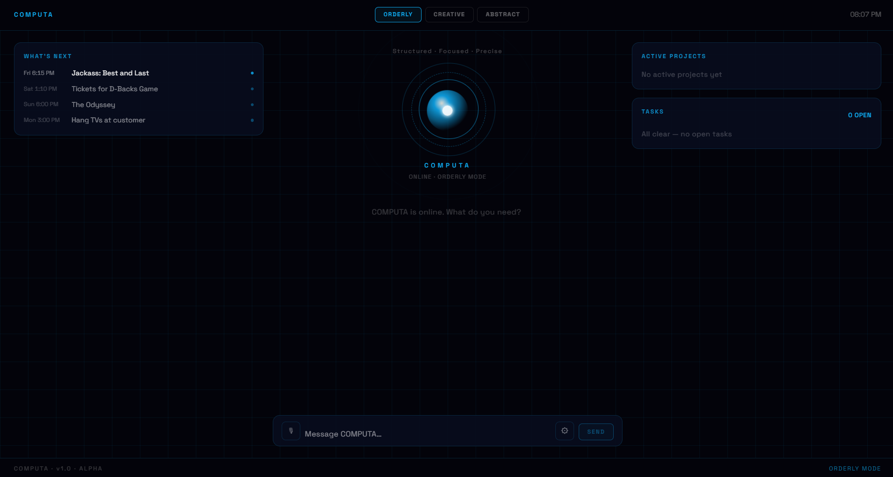
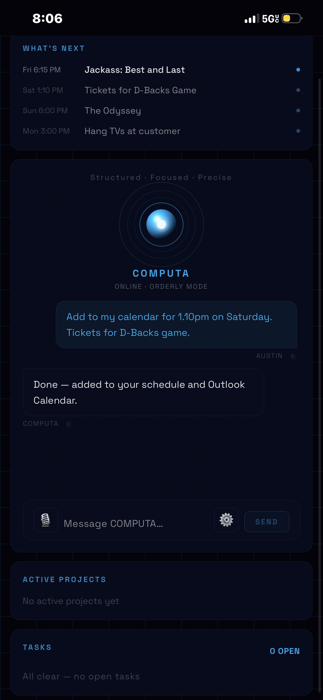

COMPUTA
FlagshipA personal AI assistant I built and run on my own NAS. A Next.js app containerized with Docker, reachable from anywhere over Tailscale, and connected to my calendar and tasks. It runs on my own hardware, under my own control.
Private project. Demo available on request.

